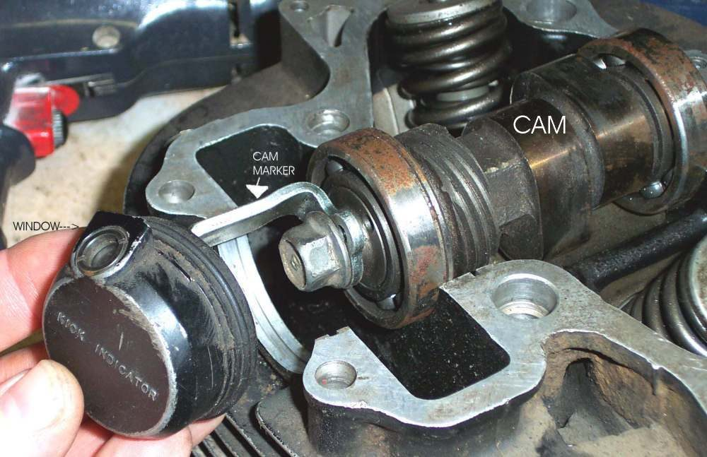
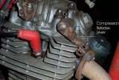
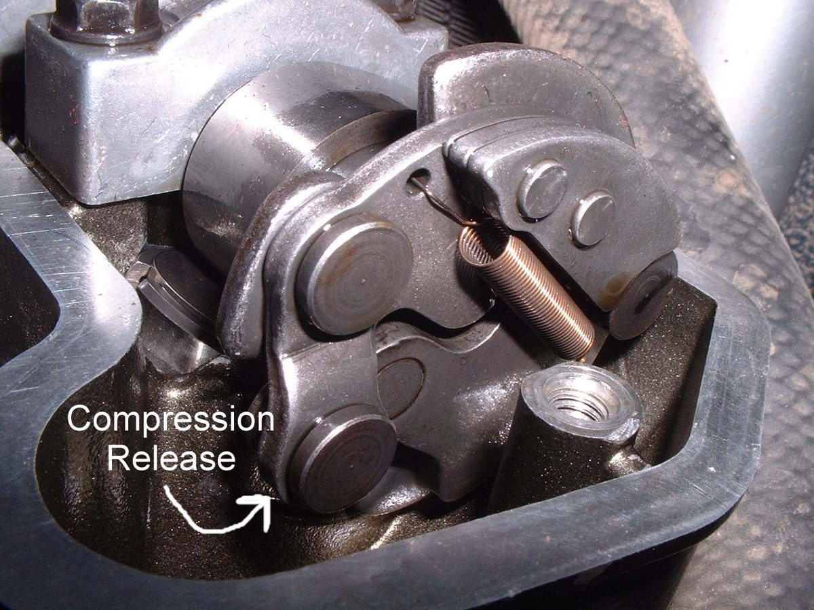
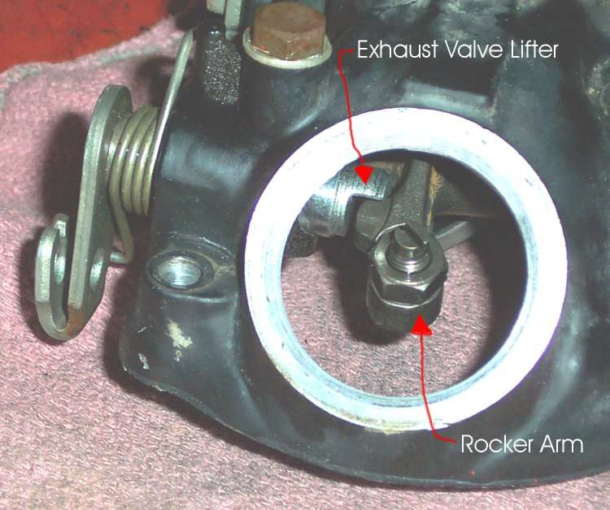
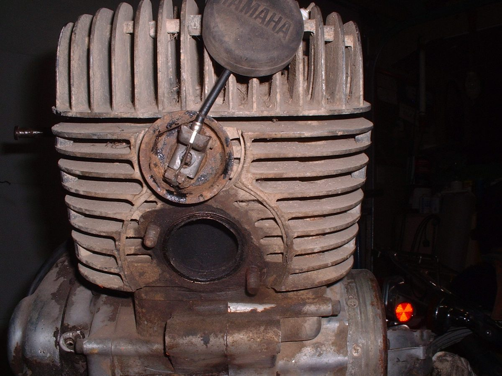

A compression release (decompressor) lets a little pressure out of the cylinder so a big single can be kicked past top dead centre more easily. On a four-stroke it lifts the exhaust valve slightly. It never lifts the inlet valve, because hot gas must not be pushed back into the intake. On a big two-stroke it opens a small valve in the head or cylinder. If the release does not return to the closed position, the engine loses compression and power and the valve seat can burn.
Safety
- Engine off and cold. Do not pull the release lever on a hot engine: it vents hot gas.
- Keep hands and cables clear of the kickstarter while testing.
- Do not ride with a release that holds the exhaust valve open: the valve seat can burn.
You need
- The type of release for your bike. Use the manual to find out which of these you have:
- A handlebar lever with a cable to a lifter on the cylinder head.
- A cable worked by a cam on the kickstarter shaft (automatic).
- A lever fitted directly on the cylinder head.
- A spring-loaded cam on the camshaft that opens the valve at rest and is thrown out by centrifugal weights when the engine runs.
- A steel rule. The shop manual for the correct free play and for any adjuster on a camshaft type.
Steps
- With the lever or kickstarter at rest, look at the cable. It must be loose, not tight.
- Measure the free play at the lever or at the cable end with the release not applied. The course guideline for cable types is about 1 to 3 mm. Use the value in your bike's manual if it differs.
- If there is no free play, the release may hold the exhaust valve slightly open. Slacken the adjuster until the free play is correct and lock it.
- Pull the lever or press the kickstarter. The kick should feel lighter as the piston comes up on the compression stroke. Let go and the lever must return fully.
- Check the cable for fraying, rust or a kink, and the lifter for a stuck pivot. Lubricate the cable (Lubricate control cables).
- On a kickstarter cam type, check that the alignment marks on the cam and shaft are lined up as in the manual. If they are not, the release works at the wrong time.
- For a camshaft-mounted release, there may be no adjustment. Check the manual. Do not take the cover off unless you are able to work to the manual.
Check your work
- Free play is present with the release not applied, and the lever returns by itself.
- The kick is easier on the compression stroke when the release is used, and normal when it is not.
- A compression test taken with the release at rest is not lower than the manual's value. Some engines with an automatic release read low at cranking speed by design. Check the manual's cranking figure before judging.
If it did not fix the problem
- Still low: Low compression, Check and adjust valve clearance.
- Kicker will not move or spring back: Kickstarter will not move or does not spring back.
- Kickstarter is still very hard to push through: Kickstarter is very hard to push through.